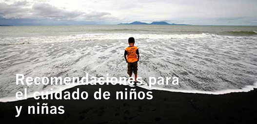

|  |
Recuerda que los niños y niñas están considerados dentro del grupo de atención prioritaria: si tienes un niño en casa y necesita asistencia, comunícalo a las autoridades más cercanas.
En situaciones de emergencia, es fundamental que atiendas primero tus necesidades y luego las necesidades de las niñas y niños: solo así les garantizarás una atención adecuada y oportuna.
Identifica las afecciones más frecuentes de tus niños y niñas, consulta oportunamente al médico y ten a la mano sus medicinas en caso de que las requiera.
Al armar su mochila de emergencia, procura incluir un objeto de su preferencia que no necesite de electricidad ni conectividad a internet: juegos de mesa, libros, historietas, papel y lápices para dibujo, etc.
Procura mantener informados a los niños y niñas, de acuerdo a su edad: